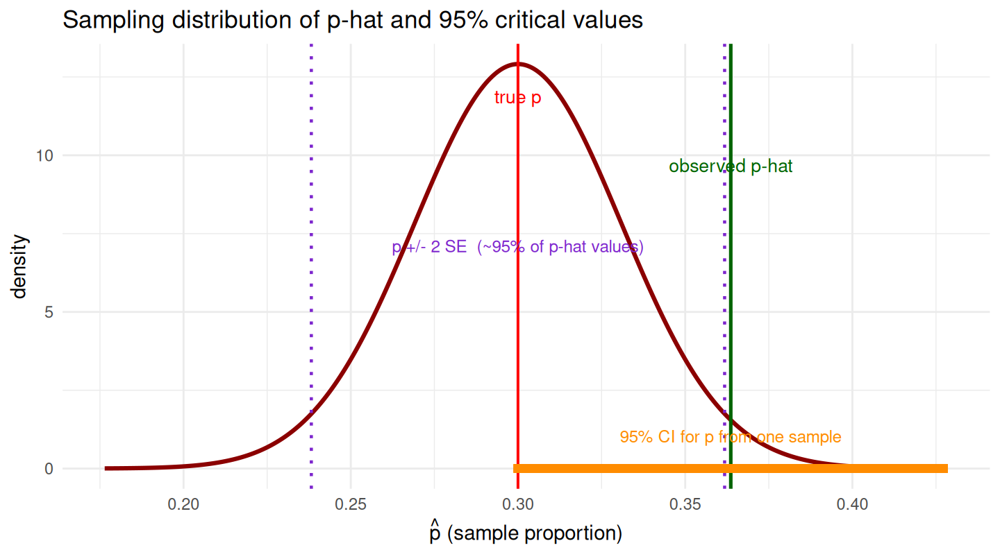
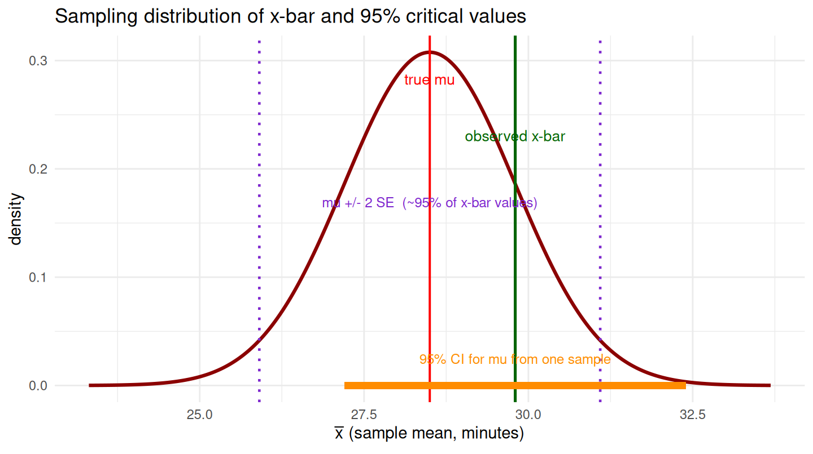
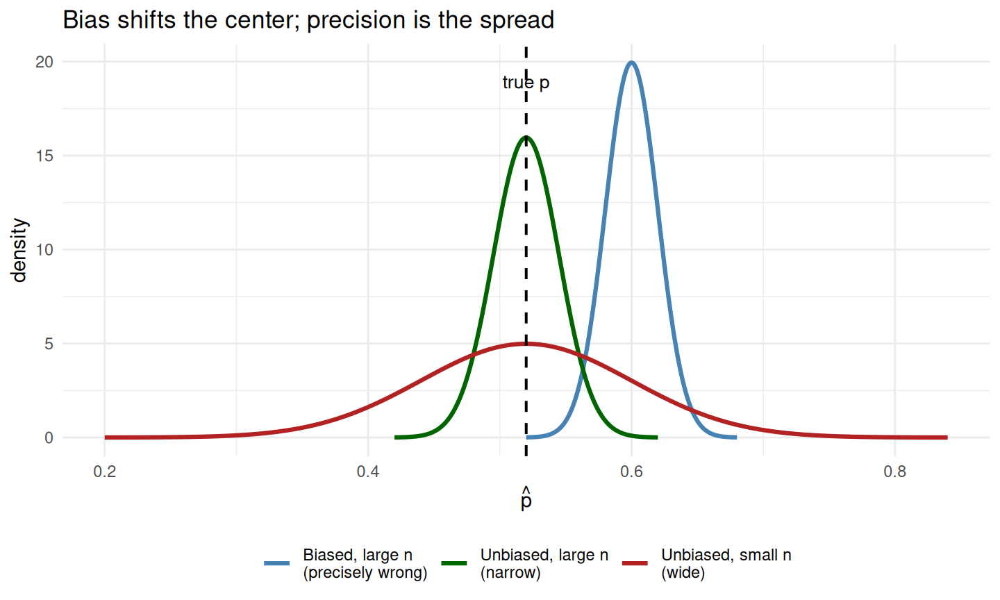
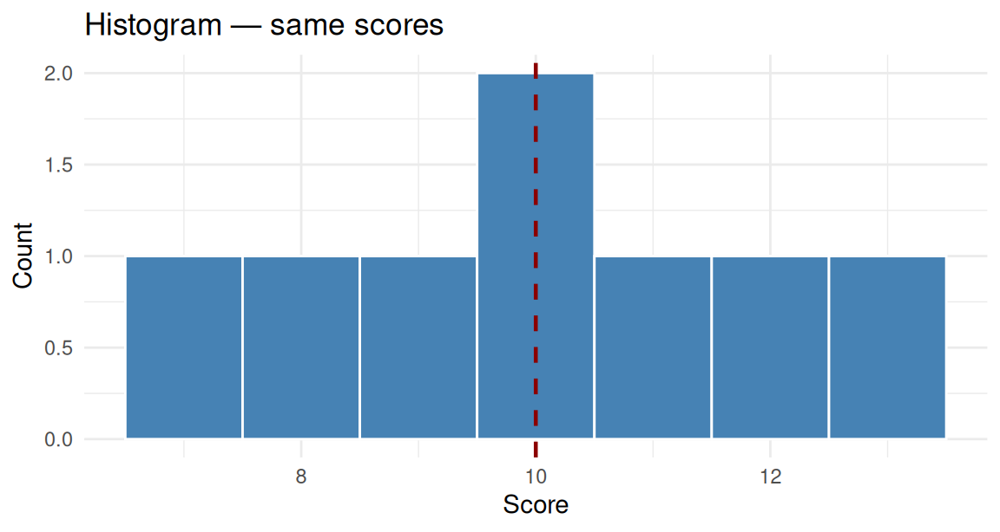
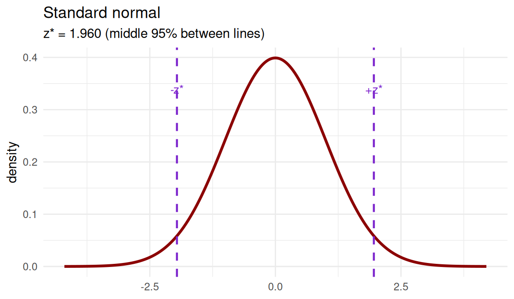
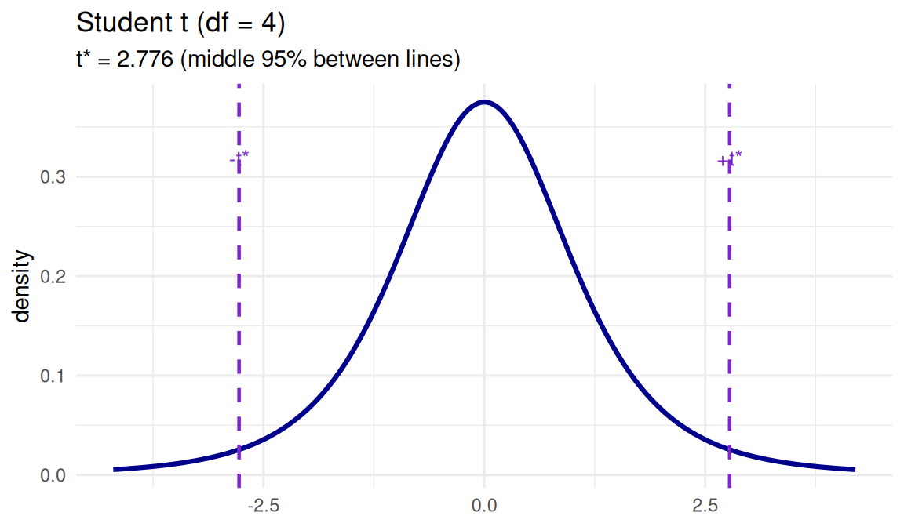

Module 2 — Read 2
Sampling design, one numerical variable, and finite population correction
Module 2, Read 2: Sampling, one numerical variable, and FPC
Project: Project 2 — Estimating the Truth
Optional supplements :
Textbook by Vu & Harrington, see Ch 3.3 — Normal distribution and Ch 4.2 — Confidence intervals;
Videos: Khan: confidence intervals and margin of error · Khan: confidence interval simulation.
ChatGPT or Notebook LM: give this page to a genAI and ask it to step you through sampling design, mean CIs,
t.test(), and FPC and test you with the questions to prepare for Quiz B. Ask it to cover each of the learning outcomes.
Complete Read 1 and Quiz A first. Skim Read 0 if you want the big-picture tour of Project 2 before the sections below.
Learning outcomes
After reading the sections, you should be able to do each of the following outcomes.
Section 1: Population, sampling, bias, and confidence intervals
Estimation vocabulary and sampling design
- Define population, sample, parameter, and statistic.
- Define sampling distribution, confidence level, bias, and precision.
- Identify SRS vs convenience sampling; carry out SRS steps.
- Explain why SRS targets bias and larger \(n\) targets precision and why a large biased sample can be precisely wrong.
- Understand each component of a confidence interval of the form statistic \(\pm c^* \times\) SE
Section 2: CLT for means, one numerical variable, and \(t\) tools
One numerical variable — graphs, spread, standardized \(t\), and \(t\) intervals
- Compute sample mean, sample SD \(s\), SE \(s/\sqrt{n}\), and margin of error for a mean.
- Graph one numerical variable with dot plot and histogram (
ggplot2). - Standardize a test for a mean with \(t = (\bar{x}-\mu_0)/(s/\sqrt{n})\)
- Read
t.test()output: connect \(t\), df, and the 95% CI to by-hand \(\bar{x}\), \(s\), and SE.
Section 3: Finite population correction (FPC)
FPC for proportion and mean CIs
State when to apply FPC \(\sqrt{(N-n)/(N-1)}\) to a standard error.
Compute 95% CIs with FPC for a proportion and for a mean in finite populations.
Use the conditions checklist choose between exact, Wald, Plus Four, or \(t\) tools.
Section 0 — Reference: notation, census, and CI interpretation
Use this section as a glossary and for recipes while you work through Sections 1–3. You do not need to memorize every row before Section 1.
Reference: population, sample, parameter, statistic, inferential statistics
Inferential statistics uses sample data to draw conclusions about a larger population. Descriptive statistics only summarizes the sample data you have.
| Term | One-sentence definition | Symbol (typical) |
|---|---|---|
| Population | Full target group in the research question | \(N\) (size), all units of interest |
| Sample | Subset actually observed | \(n\) units measured |
| Parameter | Number describing the population (usually unknown) | \(p\), \(\mu\) |
| Statistic | Number computed from the sample | \(\hat{p}\), \(\bar{x}\) |
Rule of thumb: parameters describe the whole group; statistics describe a subset.
Notation: Greek for parameters, Roman/Latin for statistics
| Parameter (population — unobserved) | Statistic (sample — observed) | |
|---|---|---|
| Proportion | \(p\) or \(\pi\) (true proportion or probability in the population) | \(\hat{p} = x/n\) (sample proportion; count \(x\) of successes) |
| Mean | \(\mu\) (population mean) | \(\bar{x}\) (sample mean) |
| Spread | \(\sigma\) (population SD) | \(s\) (sample SD) |
| Size | \(N\) (population size) | \(n\) (sample size) |
- Unobserved / unknown: parameters (\(p\), \(\mu\), \(\sigma\)) — what Project 2 asks you to estimate.
- Observed / known from data: statistics (\(\hat{p}\), \(\bar{x}\), \(s\), \(x\), \(n\)) — what you compute from the units you measured.
NoteCensus vs. sample
If you measure every unit in the population (a census), you can compute the parameter exactly, e.g. \(\hat{p}\) with \(n = N\) is \(p\). A confidence interval is not needed for uncertainty about the parameter (there is no sampling error for that parameter). Project 2 asks you to use a sample so that you’ll have relevant experience when measuring all \(N\) units is impractical.
Example: dining-hall sleep survey
Researchers want the mean sleep hours of all undergraduates. They ask the first 40 students who exit a dining hall at lunch.
- Population: all undergraduates at the university.
- Sample: those 40 students.
- Parameter: \(\mu\) = true mean sleep hours for all undergraduates (unobserved).
- Statistic: \(\bar{x}\) = mean sleep hours in the sample of 40 (observed).
- Inferential goal: estimate \(\mu\) with a CI (but see Section 1: a convenience sample may not support generalizing to all undergraduates even if the CI formula is computed correctly).
Example: school library hours
Population: all 200 public high schools in a county (\(N=200\)). SRS \(n=25\) schools observed without replacement; record weekly library open hours.
- Parameter: \(\mu\) = mean open hours for all 200 schools.
- Statistic: \(\bar{x}\) = mean hours in the 25 sampled schools.
- Inferential tool: 95% CI \(\bar{x} \pm 2\,\dfrac{s}{\sqrt{n}} \times \text{FPC}\) because \(n/N\) is relatively large.
Recipe: interpreting a 95% confidence interval (Project 2)
Use this fill-in sentence as a recipe for interpreting a CI. Replace the bracketed pieces with your project’s words.
I am 95% confident that the true [parameter: proportion or mean] of [variable in everyday words] for [population in everyday words] is between [lower bound] and [upper bound].
| Slot | What to insert | Symbol reminder |
|---|---|---|
| Parameter type | “population proportion” if binary; “population mean” if numerical | estimate \(p\) vs \(\mu\) |
| Variable | What you measured on each unit | e.g. “wearing a seatbelt on the last trip” |
| Population | The full group in your research question | e.g. “all licensed drivers in California” |
| Bounds | From your CI calculation (same units as the variable) | e.g. 0.79 to 0.87, or 9.8 to 14.2 hours |
Example (proportion): I am 95% confident that the true population proportion of students who ate breakfast today for all students enrolled in Stat 109 this term is between 0.42 and 0.58.
Example (mean): I am 95% confident that the true population meanweekly library open hours for all public high schools in the county is between 18.2 and 24.6 hours.
Section 1: Population, sampling, bias, and confidence intervals
Population, sampling, and confidence intervals in context
Why estimation?
Descriptive statistics summarize the information in a dataset. The goal of inferential statistics is to infer something about a population from a sample.
Definitions:
Population vs sample: We observe information from a subset of people or objects: this set is the sample; in inferential statistics, we want to say something about the population (e.g. all people or objects in our research question), not just the ones in our sample.
Parameter vs statistic: A parameter is a number describing the population: usually this is unknown as we only have information from a subset of the population (a sample); a statistic is a number computed from the sample (e.g. sample proportion, sample mean).
Example: Is Moderna’s vaccine effective?
Moderna vaccine trial (Reuters)
What is the population in this context? The sample? What is the parameter and what is the statistic?
NoteWorked solution — vaccine trial
- Population: all people who could receive the vaccine.
- Sample: people actually enrolled and measured.
- Parameter: true efficacy / infection rate in the population.
- Statistic: observed rate in the sample.
Example setting: St. Joe’s in Eureka, California
St. Joe’s Hospital in Eureka, California performs a certain heart procedure. We are interested in whether the observed mortality rate at St. Joe’s for this procedure is higher than the national rate.
National mortality rate (benchmark): \(p_0 = 0.08\) (8%).
Notation and Definition Practice:
Large sample: 200 patients, with 14 deaths (\(x = 14\), \(n = 200\)).
Small sample: 16 patients, with 3 deaths (\(x = 3\), \(n = 16\)).
Population: All patients who could receive this heart procedure (or all such patients at similar hospitals).
Parameter: The true mortality rate (proportion) at St. Joe’s, often denoted \(\pi\) or \(p\).
Statistic: The proportion who died in the sample: \(\hat{p} = x/n\).
General notation and sampling distribution (proportion)
For a binary outcome (e.g. died vs. survived):
- Parameter: population proportion \(\pi\) or \(p\).
- Statistic: sample proportion \(\hat{p}\) = (x=number of successes) / \(n\).
The sampling distribution of \(\hat{p}\) can be:
- Simulated (e.g. using a
forloop andmeanfunction in R with a large number of replicates), - Computed exactly using the binomial distribution (e.g.
dbinom/pbinomin R), - Approximated with the normal distribution when \(n\) is large enough (e.g. np and n(1-p) are both at least 10).
General formula for a 95% confidence interval
For a 95% confidence interval, we use the “2 standard deviations” rule from the Empirical Rule (approximate):
Statistic ± 2 × (standard deviation of statistic)
The “standard deviation of the statistic” is also called the standard error (SE). So:
95% CI ≈ statistic ± 2 × SE
NoteDefinition: 95% confidence level
If we repeated sampling many times and built a 95% CI each time, about 95% of those intervals would contain the true parameter.
The general CI pattern: statistic \(\pm\) (critical value) \(\times\) SE
Every approximate confidence interval in Module 2 has the same skeleton:
\[ \text{statistic} \pm c^* \times \text{SE}(\text{statistic}) \]
| Piece | Meaning | Proportion example | Mean example |
|---|---|---|---|
| Statistic | Number from your sample | \(\hat{p} = x/n\) | \(\bar{x}\) |
| SE | SD of the sampling distribution of that statistic | \(\sqrt{\hat{p}(1-\hat{p})/n}\) (estimation) | \(s/\sqrt{n}\) |
| \(c^*\) | Critical value — how many SEs out for your confidence level | 2 by hand (95%); \(z^* \approx 1.96\) in prop.test() |
2 by hand when \(n\) large; \(t^*\) in t.test() |
| Margin of error | \(\text{MOE} = c^* \times \text{SE}\) | half-width of the interval | same |
95% CI (by-hand rule): \(\text{statistic} \pm 2 \times \text{SE}\) when conditions hold.
Imagine: sampling distribution of the statistic
Observe: one sample → one statistic (e.g. \(\hat{p} = 0.364\)).
Imagine: draw many more samples the same way. The sampling distribution is the distribution of statistics across those repeats. When CLT / large-count conditions hold, it is approximately normal, centered at the true parameter \(\theta\) (\(p\) or \(\mu\)), with spread SE.
The plot below uses a proportion (\(\hat{p}\)) with \(n = 220\) and true \(p = 0.30\). The purple dotted lines mark \(\pm 2\) SE from the true parameter on the statistic axis — about 95% of \(\hat{p}\) values would fall between them (Empirical Rule / CLT).
| Line on plot | Meaning |
|---|---|
| Red at true \(p\) | Center of the sampling distribution (parameter fixed across repeats) |
| Purple dotted at \(p \pm 2\,\text{SE}\) | Critical values on the statistic scale — middle 95% of \(\hat{p}\) values |
| Green at observed \(\hat{p}\) | Your one sample |
| Orange segment | 95% CI for \(p\) from that sample: \(\hat{p} \pm 2\,\text{SE}(\hat{p})\) |
Same picture for a mean: sampling distribution of \(\bar{x}\)
Setting: one-way commute times (minutes). True population mean \(\mu = 28.5\) min, population SD \(\sigma = 8.2\) min, \(n = 40\) (CLT applies). One sample gives \(\bar{x} = 29.8\) min and \(s = 8.2\) min.
The curve is the sampling distribution of \(\bar{x}\) — approximately \(N(\mu,\, \sigma/\sqrt{n})\). Purple dotted lines mark \(\mu \pm 2\,\text{SE}\); orange is the 95% CI for \(\mu\) from the observed sample: \(\bar{x} \pm 2\,s/\sqrt{n}\).

| Line on plot | Meaning |
|---|---|
| Red at true \(\mu\) | Center of the sampling distribution of \(\bar{x}\) |
| Purple dotted at \(\mu \pm 2\,\text{SE}\) | Critical values — middle 95% of \(\bar{x}\) values across repeats |
| Green at observed \(\bar{x}\) | Your one sample mean |
| Orange segment | 95% CI for \(\mu\) from that sample: \(\bar{x} \pm 2\,s/\sqrt{n}\) |
When \(n\) is small, the same logic applies but \(c^*\) should be \(t^*\) from t.test() instead of 2 (Section 2).
Optional Algebra: Where does the formula for a 95% CI \(L\) and \(U\) come from?
Let \(\theta\) be the parameter (\(p\) or \(\mu\)) and \(\hat{\theta}\) the statistic (\(\hat{p}\) or \(\bar{x}\)). When the sampling distribution of the statistic is approximately normal with center \(\theta\) and spread \(\text{SE}\):
Step 1 — probability about repeated samples (parameter fixed):
\[ P\bigl(\theta - 2 \cdot \text{SE} < \hat{\theta} < \theta + 2 \cdot \text{SE}\bigr) \approx 0.95 \]
This is the Empirical Rule / CLT statement: about 95% of statistics fall within two standard errors of the true parameter.
Step 2 — rearrange inside the probability so that the parameter is in the middle:
\[ P\bigl(\hat{\theta} - 2 \cdot \text{SE} < \theta < \hat{\theta} + 2 \cdot \text{SE}\bigr) \approx 0.95 \]
So plausible values of \(\theta\) lie within \(\pm 2\) SE of the observed statistic.
Step 3 — one sample: plug in observed values
\[ L = \hat{\theta} - 2 \cdot \text{SE}, \qquad U = \hat{\theta} + 2 \cdot \text{SE} \]
Proportion (Wald): \(\hat{\theta} = \hat{p}\), \(\text{SE} = \sqrt{\hat{p}(1-\hat{p})/n}\) → \(\hat{p} \pm 2\sqrt{\hat{p}(1-\hat{p})/n}\).
Mean (by-hand): \(\hat{\theta} = \bar{x}\), \(\text{SE} = s/\sqrt{n}\) → \(\bar{x} \pm 2\,s/\sqrt{n}\) (use \(t^*\) from t.test() when \(n\) is small).
ImportantWhat the 95% refers to
The 95% in Step 1–2 is about repeated sampling (many \(\hat{\theta}\) values) while the parameter is fixed. So if you were to repeatedly collect data from samples and compute the CI for each, 95% of these intervals would contain the true parameter.
NoteProportion formulas in Read 1
Wald, Plus Four, and prop.test() examples for one proportion are in Read 1. Here we’ll keep the general CI template and focus on sampling and estimation for one mean.
Confidence intervals and the importance of sampling
NoteProject 2 connection
Project 2 requires you to collect a simple random sample from a listable population. Sampling choices directly affect whether your 95% CI calculation is valid so I’m asking you to gain experience using a good choice (SRS), not a poor choice (convenience).
In this section
A correct CI formula is not enough: how the data was collected determines whether the interval applies to the population you care about.
What is a confidence interval?
A confidence interval (CI) provides a range of plausible values for a population parameter based on a sample from the population. It quantifies the uncertainty in our sample estimate. For a 95% CI by hand, we use the approximate formula:
Statistic ± 2 × (standard error of the statistic).
Whether that interval is actually reasonable for the population we care about depends on how the sample was obtained, that is, on the sampling method.
Motivation: How many business majors?
Suppose we want to estimate the proportion of all undergraduate students on campus who are business majors.
We decide to survey the students in this Stat 109 class.
- In this async course: How many students in the room are majoring in business? (Count; call that \(x\). The class size is \(n\).)
- Example values: Suppose there are \(n = 25\) students and \(x = 8\) report being business majors.
Sample proportion: \(\hat{p} = \frac{x}{n} = \frac{8}{25} = 0.32\) (32%).
95% confidence interval for \(p\) (Wald, assuming conditions hold):
- \(\text{SE}(\hat{p}) = \sqrt{\frac{\hat{p}(1-\hat{p})}{n}} = \sqrt{\frac{0.32 \times 0.68}{25}} \approx 0.093\).
- 95% CI: \(\hat{p} \pm 2 \times \text{SE}(\hat{p}) = 0.32 \pm 0.186\), so about [0.13, 0.51] or [13%, 51%].
So from the formula we get: We are 95% confident that the true proportion of all undergraduates who are business majors is between about 13% and 51%.
Is this interval reasonable?
Critical question: Is it reasonable to treat this interval as applying to all students on campus?
- Population of interest: All undergraduate students at the university.
- Sample: Only students in this Stat 109 class.
Problem: Business majors are not required to take Stat 109. So:
- The students in this class are not a representative sample of all undergraduates.
- We have a convenience sample (whoever is in the room). The proportion of business majors in Stat 109 might be higher or lower than on the whole campus, and is likely lower since they are not required to take it.
- So the confidence interval from the formula may be misleading: it describes uncertainty due to random sampling variation in using \(\hat{p}\) to estimate \(p\), but it does not account for bias due to how we chose the sample. If the sample is biased, the interval may not be a plausible range for the campus proportion at all.
The way we sample matters. To make confidence intervals that we can trust for the population we care about, we need to think about sampling methods and bias.
Sampling frame
The sampling frame is the list we use to identify and select units from the population. Ideally, the frame matches the population of interest (every member has a chance to be selected; no one is in the frame who isn’t in the population, and vice versa). In the business-major example, “students in this Stat 109 class” is a poor frame for “all undergraduates on campus”.
Sampling methods (overview)
We can classify how a sample was obtained:
| Method | Brief description |
|---|---|
| Convenience | Select whoever is easy to reach (e.g. this class). Assume it is biased. |
| Simple random (SRS) | Every subset of \(n\) units has the same chance of being selected. |
| Stratified | Divide population into strata (groups); take a simple random sample from each stratum. |
| Cluster | Divide population into clusters; randomly select clusters and measure all (or a SRS of) units in those clusters. |
| Systematic | From a list, take every \(k\)th unit (e.g. every 10th student). |
| Multi-stage | Combine methods (e.g. randomly select clusters, then randomly select units within clusters). |
The next section goes into more detail on these methods and on carrying out simple random sampling (e.g. the one you’ll be asked to use in Project 2).
Bias and precision
- Bias: Systematic tendency to over- or under-estimate the parameter. Comes from how we select or measure (e.g. who is in the frame, who responds).
- Precision: How similar our estimates would be if we repeated the process. Affected by sample size and design.
Types of bias (when sampling or surveying):
- Sampling bias: The sampling method systematically excludes or over-represents some groups (e.g. convenience sample of one class).
- Undercoverage: Some groups in the population are not in the sampling frame or have little chance of being selected.
- Nonresponse bias: People who don’t respond differ from those who do.
- Response bias: The way questions are asked or the setting leads to systematically wrong answers.
- Voluntary response bias: Only people who choose to respond are included; they often differ from the population.
Ways to reduce bias: Use a good sampling frame, avoid convenience/voluntary samples when possible, use random sampling (e.g. SRS, stratified), try to reduce nonresponse and careful questionnaire design to reduce response bias.
Ways to increase precision: Increase sample size; sometimes use stratified or other designs that reduce variability.
Sampling methods in practice
In this section
Apply the sampling ideas from Section 4 with concrete frames, SRS steps, and design labels.
Sampling frame
The sampling frame is the list or procedure from which we actually select units. For a given population (e.g. “all undergraduates,” “all patients at a clinic”), we need to ask: What list or mechanism will we use to choose who gets into the sample? The frame should match the population as closely as possible. Gaps (undercoverage) or duplicates can cause bias.
Example: To sample undergraduates, the frame might be a registrar’s list of all enrolled students (with IDs). “Students in Stat 109” is a poor frame for “all undergraduates.”
Simple random sampling (SRS)
In simple random sampling, every possible subset of \(n\) units from the population (or from the frame) has the same chance of being the sample. Equivalently, every unit has the same probability of being selected, and selections are made at random.
How to carry out SRS (by hand or with software):
- Get a list of all units in the sampling frame (numbered 1 to \(N\)).
- Generate random numbers in the range \(1\) to \(N\) (e.g. using a random number generator, table, or software). Draw units corresponding to those numbers. If sampling without replacement, skip repeats until you have \(n\) distinct units.
- Collect data from the units in the sampling frame that correspond to the n distinct units from step 2.
Example: To select 5 students from a class of 25, number students 1–25. Use a random number generator (or similar) set to “integers from 1 to 25,” generate numbers, and collect data from the students with those IDs. If a number repeats, draw again until you have 5 distinct IDs.
Classifying sampling methods
Given a description of how a sample was obtained, classify it as one of:
| Method | What happens |
|---|---|
| Convenience | Units chosen because they are easy to access (e.g. “people in this room,” “first 50 visitors”). Often not representative. |
| Simple random (SRS) | Every set of \(n\) units from the frame has the same chance of being selected; usually via random numbers. |
| Stratified | Population divided into strata (e.g. by major, by year); a random sample is taken from each stratum. Improves representation of each group. |
| Cluster | Population divided into clusters (e.g. schools, wards); we randomly select clusters and then observe all (or a random sample of) units in those clusters. Useful when listing individuals is hard but listing clusters is easy. |
| Systematic | From an ordered list, pick a random start, then take every \(k\)th unit (e.g. every 10th name). |
| Multi-stage | Several stages of random selection (e.g. randomly choose schools, then randomly choose students within those schools). |
Examples: Classify, generalizability, and improving the design
For each scenario below: (1) Classify the sampling method as random sampling (e.g. SRS, stratified, cluster) or convenience (or other as appropriate). (2) Impact on generalizability: Would results generalize well to the population of interest? Why or why not? (3) How to reduce bias and how to increase precision (one concrete suggestion for each, if applicable).
Example 1: Campus opinion poll
A student group wants to estimate the proportion of all undergraduates who support building a new recreation center. They stand outside the student union from 11 a.m. to 1 p.m. on two weekdays and ask every 10th person who walks by to complete a short survey. They get 120 responses.
- Classify: Is this random sampling or convenience (or something else)? What is the sampling frame?
- Impact on generalizability: Who might be over- or under-represented? Can we generalize the sample proportion to all undergraduates?
- Reduce bias: How could the study be redesigned to reduce bias (e.g. who is included)?
- Increase precision: What could be done to increase precision of the estimate?
Answers
- Classify: Convenience (not SRS). The implicit frame is people who walk by the student union 11 a.m.–1 p.m. on those two weekdays, not the full undergraduate roster.
- Impact on generalizability: Likely over-represents students who are on campus mid-day (fewer commuters, online-only, or off-campus workers). Under-represents students who never pass the union at those times. Cannot safely generalize to all undergraduates.
- Reduce bias: Draw an SRS (or stratified SRS) from the registrar’s list of all enrolled undergraduates; contact sampled students by email/portal with follow-up; avoid location-and-time intercept sampling.
- Increase precision: After fixing the design, increase \(n\) (more responses from a probability sample). Stratifying by campus/college/year can sometimes lower variability if support rates differ a lot across groups.
Example 2: Online course feedback
A university wants to estimate the mean satisfaction score (1–5) for all students who took at least one online course last year. They send an email survey to a random sample of 500 students drawn from the registrar’s list of all students who were enrolled in at least one online course; 180 students respond.
- Classify: Is the selection of the 500 random or convenience? What about the 180 who responded?
- Impact on generalizability: Even though the initial 500 were a random sample, might the 180 respondents differ from the 320 non-respondents? How does that affect generalizability?
- Reduce bias: What type of bias is most relevant here (e.g. nonresponse)? How could bias be reduced?
- Increase precision: How could precision be increased (e.g. sample size, design)?
Answers
- Classify: The 500 are a random sample (SRS from a good frame: registrar list of students enrolled in ≥1 online course). The 180 respondents are NOT a random sample: they are a voluntary subset of the 500 (who chose to respond).
- Impact on generalizability: Yes: the 180 may differ from the 320 non-respondents (e.g. more satisfied, more engaged, or more frustrated). Generalizability is to students who took online courses last year, but only if nonresponse did not shift the mean; with 36% response, nonresponse bias is a real concern.
- Reduce bias: Main issue: nonresponse bias. Reduce it with reminders, incentives, short surveys, multiple contact modes, and comparing early vs. late responders; report response rate and discuss limitations.
- Increase precision: Increase the initial random sample size (e.g. 800–1000 invites to target more respondents), or use stratified sampling by department/course level if satisfaction varies across groups.
Example 3: Hospital patient satisfaction
A hospital wants to estimate the proportion of patients who are “very satisfied” with their care. They hand out a satisfaction survey to every patient who is discharged from the maternity ward during a 3-month period and receives the survey before leaving; about 70% return the completed survey.
- Classify: How were patients selected? Is this random sampling or convenience?
- Impact on generalizability: To what population would the sample proportion generalize? To all hospital patients? To all maternity patients?
- Reduce bias: What biases might be present (e.g. undercoverage, nonresponse)? Suggest one way to reduce bias.
- Increase precision: Suggest one way to increase precision.
Answers
- Classify: Convenience / census-of-ward over a fixed period: every discharged maternity patient who receives a survey (not an SRS of all hospital patients). Voluntary return adds voluntary response flavor among those handed a survey.
- Impact on generalizability: Generalizes at best to maternity patients discharged from that ward during those 3 months (and who completed the survey), not all hospital patients, and not necessarily all maternity patients at other times or hospitals.
- Reduce bias: Nonresponse (30% did not return) and possible response bias (happier or unhappier patients may return at different rates). Reduce bias with follow-up calls, neutral wording, private return boxes, and comparing respondents vs. non-respondents on available records.
- Increase precision: Survey more patients (longer time window or additional maternity sites) or extend to a random sample of maternity discharges hospital-wide if the goal is a broader population.
Reducing bias and increasing precision
- Reduce bias: Use a frame that covers the population; avoid convenience and voluntary response when possible; use random sampling (SRS, stratified, etc.); minimize nonresponse and design surveys to reduce response bias.
- Increase precision: Increase sample size; use designs that reduce variability (e.g. stratified sampling when groups differ a lot).
Click to reveal answers
Parameters: \(p\), \(\mu\), \(\sigma\). Statistics: \(\hat{p}\), \(\bar{x}\), \(s\).
Parameter: population summary (unknown). Statistic: sample summary (e.g. \(\hat{p}\), \(\bar{x}\)).
When you measure every unit in the population (\(n = N\)) — the sample statistic is the parameter.
Frame: list for selection. Bias: center of estimates systematically off the parameter (shift of sampling distribution). Precision: spread of estimates across repeats (SE / CI width).
Precision: larger \(n\). Bias: SRS from a good frame. Huge convenience sample → narrow but biased (precisely wrong) — \(n\) does not fix who was included.
Convenience sample — limited generalizability.
Bias and precision: repeated-sampling definitions
| Idea | Repeated-sampling definition | What improves it |
|---|---|---|
| Bias | Systematic shift of estimates away from the target parameter: estimates tend to land too high or too low. Formally, bias is about the center of the sampling distribution of \(\hat{\theta}\) vs. the true \(\theta\) (e.g. mean of many \(\hat{p}\) values minus \(p\)). | Good design: SRS from a frame that matches the population; avoid convenience / voluntary samples; reduce nonresponse and response bias |
| Precision | How close together estimates would be if you repeated the study. High precision = narrow cluster of estimates. | Larger \(n\) (smaller SE); sometimes stratified designs that lower variability |
Bias is about where estimates land (accuracy / centering). Precision is about how tight they are (repeatability). We want both: estimates should centered on the truth and not too scattered.
What about “precisely wrong” answers?
A large sample from a bad sampling method can give a very narrow confidence interval that misses the truth completely: these estimates are precise but biased.
Classic example — 1936 U.S. presidential election (Literary Digest poll):
- The magazine surveyed millions of readers (huge \(n\) → very small SE → high precision).
- The sample was drawn from magazine subscribers, phone directories, and car registries — during the Great Depression, that group over-represented wealthier Republican-leaning voters and under-represented many Roosevelt supporters.
- The poll confidently predicted a Landon win; Roosevelt won in a landslide.
Lesson: Increasing \(n\) tightens the interval; it does not fix who got into the sample. A convenience or voluntary frame can produce a precisely wrong conclusion.
Surveying only Stat 109 students to estimate business majors for all undergraduates can yield a narrow Wald CI that is still misleading for the campus.

| Curve | Bias? | Precision? | Takeaway |
|---|---|---|---|
| Blue — small \(n\), SRS | Low (centered near \(p\)) | Low (wide) | Valid method, but interval is wide |
| Green — large \(n\), SRS | Low | High (narrow) | What we want when the frame is good |
| Red — large \(n\), bad frame | High (center near 0.60, not 0.52) | High (narrow) | Danger: narrow interval around the wrong value |
ImportantWhat to worry about in Project 2
- Use SRS from your numbered sampling frame to control selection bias (required).
- Choose \(n\) large enough for useful precision (narrow enough CI to answer your question).
- Check conditions and interpret the CI with the recipe.
Sampling in Practice
Convenience sampling
- Identify: Units chosen because they are easy to reach (class roster, dining hall, volunteers).
- How it is (not) carried out: No random mechanism; whoever is available gets measured.
- Bias: Systematic over/under-representation of groups (time of day, self-selection).
- Generalizability: Cannot safely generalize to a broader population — the CI formula’s margin of error does not fix selection bias.
Simple random sampling (SRS)
How to carry out:
- Create a sampling frame numbered \(1\) to \(N\) of the entire population.
- Draw \(n\) distinct random integers from \(1\) to \(N\) (random.org,
sample.int(N, n), etc.). - Measure the variable (e.g. major or age) only for the \(n\) units from step 2; document \(N\), \(n\), and the random mechanism.
Section 2: Inference for one mean
Inference for one mean
NoteBridge from Read 1
Read 1 focused on one proportion (exact binom.test, approximate prop.test). In this section, we apply the same ideas to a one mean \(\mu\) from a numerical variable. It’s the same inferential ideas (statistic, SE, conditions, CI) but the formulas and R code will be different.
Formula 2: One mean
For a population mean \(\mu\), we estimate it with the sample mean \(\bar{x}\). The standard error of \(\bar{x}\) is:
\[\text{SE}(\bar{x}) = \frac{s}{\sqrt{n}}\]
where \(s\) is the sample standard deviation. So the 95% confidence interval for a single mean is:
\[\bar{x} \pm 2 \frac{s}{\sqrt{n}}\]
(For small samples, we should use the \(t\) distribution; here we use 2 for a simple “by hand” rule.)
Conditions for Formula 2:
- Either the population is (approximately) normal, or the sample size is \(n > 30\) (so the sampling distribution of \(\bar{x}\) is approximately normal by the Central Limit Theorem).
- The sample is a random sample (or can be treated as such) from the population.
Example: Confidence interval for a mean (by hand)
Goal: Estimate the mean recovery time (in days) for patients after the advanced heart procedure using a small sample, with 95% confidence.
Data (recovery time in days for \(n = 5\) patients):
5, 7, 7, 9, 12
By hand:
- Sample mean: \(\bar{x} = \frac{5+7+7+9+12}{5} = \frac{40}{5} = 8\) days.
- Sample standard deviation:
Deviations from mean: \(-3\), \(-1\), \(-1\), \(1\), \(4\).
Squared deviations: \(9\), \(1\), \(1\), \(1\), \(16\). Sum = \(28\).
\(s^2 = 28/(5-1) = 7\), so \(s = \sqrt{7} \approx 2.65\) days. - Standard error: \(\text{SE}(\bar{x}) = \frac{s}{\sqrt{n}} = \frac{2.65}{\sqrt{5}} \approx 1.18\) days.
- 95% CI: \(\bar{x} \pm 2 \times \text{SE}(\bar{x}) = 8 \pm 2(1.18) = 8 \pm 2.36\) days.
- Interval: Lower bound \(\approx 5.64\) days, upper bound \(\approx 10.36\) days, so about [5.6, 10.4] days.
Interpretation: We are 95% confident that the true mean recovery time (in days) for patients after this advanced heart procedure is between about 5.6 and 10.4 days. The 95% confidence means that if we were to repeat the data collection many times, 95% of the time the true mean recovery time would be within the intervals (e.g. lower and upper bounds) computed from the samples. This interval is based on only 5 patients, so it is wide and uncertain; a larger sample would give a narrower and more precise interval.
In depth description for one numerical variable
A numerical variable takes values that are counts or measurements where it is meaningful to sort them in order and to compute distance between any two of them. We usually report center and spread; this lecture focuses on center and on graphs for the whole distribution.
Mean (average). For values \(x_1,\ldots,x_n\), the sample mean is
\[ \bar{x} = \frac{1}{n}\sum_{i=1}^n x_i. \]
The capital Greek letter Sigma (\(\Sigma\)) denotes summation. The expression \(\sum_{i=1}^n x_i\) means: add \(x_1 + x_2 + \cdots + x_n\), including every observation of \(x\), indexed by \(i\) from \(1\) to \(n\). Multiplying that total by \(\frac{1}{n}\) rescales it: you are taking the combined amount (the total sum) and expressing it as if it belonged to a single unit, “per person,” “per observation,” or “per employee” in a payroll setting.
How to read the mean. Think: total of all values, spread evenly across \(n\) slots. If everyone’s contribution were replaced by the same number while keeping the same total, that common number would be the mean.
Visual (balance point). On a dot plot with one dot per observation, the mean is the balance point (center of mass) along the horizontal axis: equal weight at each dot, and the axis would balance at \(\bar{x}\). On a histogram, you get the same idea if you treat each bin’s count (or properly scaled density) as sitting at the bin center, that is a standard approximation; the exact mean always comes from the original values, not from the drawn bins.
Median. Sort the values from smallest to largest. If \(n\) is odd, the median is the middle value. If \(n\) is even, it is the average of the two middle values. In the usual case with no ties sitting exactly on the split, the median is the value such that half of the observations are below it and half are above it. (If many values tie at the median, the “50% / 50%” story is still right in spirit but the counts on each side need a careful definition, we keep the ordered-list rule for computing it.)
How to read the median. The median is a positional measure: it marks the center of the ordered list, not the balance of the total of the numbers. It is not pulled in dollars-and-cents by a few huge values in the same way the mean is.
Example: salaries. Suppose you list every employee’s annual salary. The median answers a “typical employee” question: half of the staff earn less than or equal to that amount and half earn more than or equal to it. The median is a useful picture of how pay feels in the middle of the workforce. The mean answers a “budget” question: if the firm paid the same total in salaries but split it evenly across every employee, each would get the mean. So the mean is the per-employee share of the fixed payroll total; it is what you need if you want to think about resizing the organization (“what if we had twice as many people with the same total wage bill?”) or track aggregate cost per head.
Which should you report? There is no single correct choice for every problem. If the goal is to describe the feeling of a typical standing, the median is often easier to interpret. If the goal is to tie summaries to a total, a rate per unit, or planning with a fixed sum divided among \(n\) units, the mean is a better choice. Report what matches your question and when in doubt, both plus a graph can be clearer than either alone.
Examples by Hand
- Data: \(7,\ 8,\ 9,\ 10,\ 10,\ 11,\ 12,\ 13\) .
- Mean: \(\bar{x} = (7+8+9+10+10+11+12+13)/8 = 80/8 = 10\).
- Median: notice that the 8 values are already sorted from smallest to bigest and the two middle values are both \(10\), so the median is \(10\).
Here the mean and median match.
- Data: \(2,\ 3,\ 4,\ 5,\ 6,\ 7,\ 100\) (seven values). One value (\(100\)) is far from the rest.
- Median: with seven values already sorted, the median is the fourth in the list so the median is \(5\).
- Mean: the sum is \(2+3+4+5+6+7+100 = 127\), so \(\bar{x} = 127/7 \approx 18.1\).
The mean is pulled toward the large observation; the median stays with the middle of the bulk of the data. For describing a “typical” case here, the median (\(5\)) is the point at which about half the values are less than it and half are greater than it. The mean reflects the total (\(127\)) spread across seven slots, including the one very large contribution and is the “balance point” of all seven values.
Dot plot and histogram: graphs for one numerical variable
For one numerical variable, start with a dot plot (every value visible), then build a histogram by binning those dots.
Dot plot — one dot per observation
Place each measured value on a number line and stack a dot for every observation (repeats stack higher).
Example A — quiz scores (\(n = 8\)): 7, 8, 9, 10, 10, 11, 12, 13.
- \(\bar{x} = 80/8 = 10\); median \(= 10\) (two middle values both 10).
- On the dot plot: single dots at 7, 8, 9, 11, 12, 13; two stacked dots at 10.
Example B — recovery days (\(n = 5\)): 5, 7, 7, 9, 12.
- \(\bar{x} = 8\); two stacked dots at 7


From dot plot to histogram — count dots in bins
A histogram groups values into bins (intervals) and draws a bar height = count in each bin. It is the dot plot after you slide dots into bins and count:
- Choose binwidth (e.g. 1 point for integer scores).
- Draw bin boundaries (with
boundaryinggplot2so bins align sensibly). - Count how many dots fall in each bin.
- Draw a bar with that count.
By hand — Example A, binwidth 1, boundaries at 6.5, 7.5, …
| Bin (score range) | Dots in bin | Bar height |
|---|---|---|
| \((6.5, 7.5]\) | 7 | 1 |
| \((7.5, 8.5]\) | 8 | 1 |
| \((8.5, 9.5]\) | 9 | 1 |
| \((9.5, 10.5]\) | 10, 10 | 2 |
| \((10.5, 11.5]\) | 11 | 1 |
| \((11.5, 12.5]\) | 12 | 1 |
| \((12.5, 13.5]\) | 13 | 1 |
The histogram bar at 10 is taller because two observations share that value — exactly what the dot plot showed as a double stack.
When to prefer each: Dot plots are good for small samples by hand; histogram are better when \(n\) is larger or values are continuous and you want a smooth “shape” summary.
Sample standard deviation \(s\), a measure of spread from the center in your data
Sample SD \(s\) measures how far observed values typically fall from the sample mean \(\bar{x}\) (the center in your data). It is not the theoretical \(\sigma\) for a population model — it summarizes this sample only.
\[s = \sqrt{\frac{\sum_{i=1}^n (x_i - \bar{x})^2}{n - 1}}\]
How to read \(s\): “Typical deviation of observations from \(\bar{x}\).”
- Small \(s\): values cluster near \(\bar{x}\) (dot plot stacks close together).
- Large \(s\): values are scattered far from \(\bar{x}\) (wide dot plot or long histogram).
Example A — quiz scores: \(\bar{x} = 10\).
- Deviations rom mean: \(-3, -2, -1, 0, 0, 1, 2, 3\) → squared sum \(= 28\) → \(s^2 = 28/7 = 4\) → \(s = 2\) points.
- Interpretation: quiz scores typically differ from 10 by about 2 points.
Example B — recovery days: \(\bar{x} = 8\).
- \(s = \sqrt{7} \approx 2.65\) days — moderate spread; the duplicate 7s pull deviations toward 0 but 12 pulls upward.
Example C — salaries with an outlier: 2, 3, 4, 5, 6, 7, 100 (\(n = 7\)).
- \(\bar{x} \approx 18.1\); median \(= 5\).
- Deviations from \(\bar{x}\) are large because of 100 → \(s \approx 36.5\) (very large).
- Interpretation: \(s\) is inflated by the outlier; the median and dot plot show the bulk of workers near 2–7, while \(s\) mixes in the one extreme value.
Optional: Mean and median in the tidyverse
Syntax note: In dplyr, summarize() and summarise() are the same function (American vs. British spelling). For pipes, base R’s native |> (R 4.1+) works like the magrittr pipe %>% from the tidyverse: both pass the left-hand side into the first argument of the function on the right. This lecture uses |> and summarize(); use whichever spelling and pipe you prefer, they behave the same here.
The pipe |> sends the data on its left into the first argument of the function on its right. We often pipe a data frame (e.g. a dataset with examples in rows and variables in columns) into summarize() to compute summaries.
Code
if (!requireNamespace("tidyverse", quietly = TRUE)) {
install.packages("tidyverse", repos = "https://cloud.r-project.org")
}
library(tidyverse)
scores <- tibble(
score = c(7, 8, 9, 10, 10, 11, 12, 13)
)
scores |>
summarize(
n = n(),
mean_score = mean(score),
median_score = median(score)
)# A tibble: 1 × 3
n mean_score median_score
<int> <dbl> <dbl>
1 8 10 10Here n() counts rows inside summarize() (if there is one row per student, then this gives the number of students).
Standardizing test statistics for a mean: from normal \(z\) to Student \(t\)
NoteBridge from Read 1
Read 1 standardized a proportion (or binomial count) with
\[z = \frac{\hat{p} - p_0}{\sqrt{p_0(1-p_0)/n}} \quad\text{or}\quad z = \frac{x - np}{\sqrt{np(1-p)}},\]
then compared \(z\) to \(\pm 2\) on the standard normal scale when large-count conditions hold. The same shift ÷ spread idea applies to means.
The standardizing pattern
Definition (standardized test statistic):
\[ \frac{\text{observed statistic} - \text{reference value under } H_0}{\text{standard error of the statistic}} \]
For a sample mean \(\bar{x}\), reference \(\mu_0\) from \(H_0\), and standard error \(\text{SE}(\bar{x}) = s/\sqrt{n}\):
| Setting | Standardized Statistic | Reference distribution |
|---|---|---|
| \(\sigma\) known (rare) | \(z = \dfrac{\bar{x} - \mu_0}{\sigma/\sqrt{n}}\) | Standard normal — Empirical Rule \(\pm 2\) for 95% |
| \(\sigma\) unknown (usual) | \(t = \dfrac{\bar{x} - \mu_0}{s/\sqrt{n}}\) | Student \(t\) with df \(= n - 1\) |
We almost always use \(s\) from the sample because \(\sigma\) is unknown. That extra uncertainty matters most when \(n\) is small.
Why move from normal to \(t\)?
- By-hand 95% CI (rule of thumb): \(\bar{x} \pm 2 \cdot \dfrac{s}{\sqrt{n}}\) — uses 2 from the Empirical Rule (normal).
- Exact \(t\) interval: \(\bar{x} \pm t^* \cdot \dfrac{s}{\sqrt{n}}\) where \(t^*\) is the correct multiplier from the \(t\) distribution with degrees of freedom \(\text{df} = n - 1\).
The \(t\) statistic itself is easy by hand (same form as \(z\), but \(s\) instead of \(\sigma\)). What is not reasonable by hand is finding \(t^*\) or \(p\)-values from the \(t\) curve: the formula for the \(t\) pmf is complicated and depends on the sample size through a quantity called degrees of freedom. Software gives the exact tail areas for p-values and critical values so we’ll just use t.test() in R and leave a deep mathematical understanding for an upper division or graduate level probability and statistics course.
Degrees of freedom (\(\text{df} = n - 1\)): one parameter (\(\bar{x}\)) is estimated from the data before measuring spread for one mean.
Visualization: standard normal vs. Student \(t\)
For a 95% confidence interval, we want the middle 95% of the reference distribution between two cutoffs \(\pm c\). The critical value \(c\) is the number of standard errors out from 0 that marks off the central 95%:
| Distribution | 95% critical value | R command (upper tail 2.5%) |
|---|---|---|
| Standard normal | \(z^* \approx 1.96\) (often rounded to 2 in this course for by hand calculations) | qnorm(0.975) |
| Student \(t\), \(\text{df} = 4\) | \(t^* \approx 2.78\) (wider than normal) | qt(0.975, df = 4) |
Purple dashed lines on the plots below are at \(\pm z^*\) (normal) and \(\pm t^*\) (\(t\) with \(\text{df} = 4\), matching \(n = 5\) recovery times). The \(t\) curve has heavier tails: we must go farther from 0 to capture 95% in the middle, so the CI is wider than the \(\pm 2\) rule of thumb we’ve used for calculations by hand.


Using \(t^*\) to build a 95% CI (recipe)
Once you have \(\bar{x}\), \(s\), \(n\), and \(t^*\) from the \(t\) distribution with \(\text{df} = n - 1\):
- Standard error: \(\text{SE}(\bar{x}) = s/\sqrt{n}\)
- Margin of error: \(\text{MOE} = t^* \times \text{SE}\)
- Endpoints: \(\bar{x} - \text{MOE}\) and \(\bar{x} + \text{MOE}\)
\[\text{95\% CI for } \mu: \quad \bar{x} \pm t^* \cdot \frac{s}{\sqrt{n}}\]
The critical value \(t^*\) is the horizontal-axis cutoff on the \(t\) curve (purple lines above). We multiply it by SE to move from the standardized curve back to the original scale (days, hours, etc.).
Example: recovery times — t.test() by hand
Data (days, \(n = 5\)): 5, 7, 7, 9, 12. Estimate \(\mu\) with a 95% CI (and optionally test \(H_0: \mu = 10\)).
Step 1: By “hand”
| Quantity | By hand | Value |
|---|---|---|
| \(\bar{x}\) | \((5+7+7+9+12)/5\) | 8 days |
| \(s\) | \(\sqrt{\sum(x_i-\bar{x})^2/(n-1)} = \sqrt{28/4} = \sqrt{7}\) | 2.646 days |
| \(\text{SE}(\bar{x})\) | \(s/\sqrt{n} = 2.646/\sqrt{5}\) | 1.183 days |
| \(\text{df}\) | \(n - 1\) | 4 |
Step 2: Critical value \(t^*\) (from R, not by hand)
qt(0.975, df = 4) gives \(t^* \approx \mathbf{2.776}\). Compare to \(z^* \approx 1.96\) or the 2 rule of thumb — \(t^*\) is larger because \(\text{df}\) is small.
Step 3 — Margin of error and CI by hand
\[\text{MOE} = t^* \times \text{SE} = 2.776 \times 1.183 \approx \mathbf{3.28}\text{ days}\]
\[\text{Lower} = 8 - 3.28 = \mathbf{4.72}, \qquad \text{Upper} = 8 + 3.28 = \mathbf{11.28}\]
95% CI: [4.72, 11.28] days.
Compare to the normal shortcut by hand with 2: \(2 \times 1.183 \approx 2.37\) → \(8 \pm 2.37\) → [5.63, 10.37] — too narrow for small \(n\); the \(t\) interval is more appropriate.
Interpretation: I am 95% confident that the true population mean recovery time in days for patients who receive this procedure is between 4.7 and 11.3 days.
Optional test \(H_0: \mu = 10\): \(t = (8-10)/1.183 \approx -1.69\) — between \(\pm t^*\), so fail to reject (matches large p-value from t.test() below).
R check — same numbers as the by-hand work:
By hand: xbar = 8.00, s = 2.65, SE = 1.183 t statistic (H0: mu = 10): -1.690 df = 4; 95% t* = 2.776 (compare to 2 from Empirical Rule) MOE with 2: 2.37; MOE with t*: 3.29t.test() output:
One Sample t-test
data: recovery
t = -1.6903, df = 4, p-value = 0.1662
alternative hypothesis: true mean is not equal to 10
95 percent confidence interval:
4.714866 11.285134
sample estimates:
mean of x
8 Reading t.test() output — connect to by-hand values
| R line | Meaning | Match to by hand |
|---|---|---|
t = ... |
Standardized \(t\) statistic | Should match \((\bar{x}-\mu_0)/\text{SE}\) (e.g. \(\approx -1.69\)) |
df = ... |
Degrees of freedom \(n - 1\) | \(5 - 1 = 4\) |
p-value |
Two-sided evidence against \(H_0: \mu = \mu_0\) | Small → reject; large → fail to reject |
95 percent confidence interval |
\(\bar{x} \pm t^* \cdot \text{SE}\) | Endpoints use \(t^*\), not 2 — exact \(t\) interval |
sample estimates: mean of x |
\(\bar{x}\) | 8 |
std dev in sd if computed separately |
\(s\) | \(\approx 2.65\) |
Project 2: You need the confidence interval from t.test(), and don’t need to worry about building up the interval “by hand”.
Summary of One Numerical Variable
For a single numerical variable, mean and median describe center while standard deviation measures spread; ggplot2 gives histograms and dot plots of the full distribution. For inference about one population mean, the one-sample t-test and interval come from t.test() on the sample data in a R vector.
Click to reveal answers
MOE \(= 2.776 \times 1.183 \approx 3.28\); CI \([4.72, 11.28]\) days.
\(\bar{x}=8\), SE \(\approx 1.18\), \(t = (8-10)/1.18 \approx -1.69\).
The \(t\) distribution has heavier tails; you need a larger cutoff to capture the middle 95%.
\(s\) replaces unknown \(\sigma\); the \(t\) distribution (df \(= n-1\)) gives the exact multiplier and \(p\)-values — wider than the normal 2 rule.
df \(= n-1\). t should equal \((\bar{x}-\mu_0)/\text{SE}\).
I am 95% confident that the true population mean one-way commute time in minutes for all workers in the metro area is between 25.9 and 31.1 minutes.
\(\bar{x} = 12\). \(s = \sqrt{8} \approx 2.83\) hours.
Mean \(= 5.8\). Median \(= 5\).
\(\text{SE} = s/\sqrt{n} \approx 1.18\).
geom_dotplot();geom_histogram().Random sample and \(n>30\) (CLT), or population roughly normal.
Section 3: Finite population correction (FPC)
Finite population correction (FPC)
NoteProject 2
Project 2 samples without replacement from a listable population. If the size of this population \(N\) is close to teh size of the sample \(n\) then the approximate methods used so far may not be valid. One solution is that when \(n/N\) is not tiny, multiply the standard error by the FPC for both proportion and mean CIs.
Finite population correction (FPC)
So far we assumed the sample is a small fraction of an infinite population, so we used:
- Proportion: \(\text{SE}(\hat{p}) = \sqrt{\frac{\hat{p}(1-\hat{p})}{n}}\)
- Mean: \(\text{SE}(\bar{x}) = \frac{s}{\sqrt{n}}\)
When we sample without replacement from a finite population of size \(N\), and \(n\) is not negligible compared to \(N\), we should multiply the standard error by the finite population correction (FPC):
\[\text{FPC} = \sqrt{\frac{N-n}{N-1}}.\]
(When \(N\) is large, \(\sqrt{\frac{N-n}{N}}\) is a common approximation.)
Why? When we draw a large fraction of the population, we get more information than the “infinite population” formula suggests, so the standard error shrinks (the FPC is \(< 1\) when \(n > 1\)). When \(n\) is small relative to \(N\), the FPC is close to 1 and we usually ignore it.
95% confidence interval for a proportion (with FPC):
\[\hat{p} \pm 2 \sqrt{\frac{\hat{p}(1-\hat{p})}{n}} \cdot \sqrt{\frac{N-n}{N-1}}.\]
95% confidence interval for a mean (with FPC):
\[\bar{x} \pm 2 \frac{s}{\sqrt{n}} \cdot \sqrt{\frac{N-n}{N-1}}.\]
When to use: When the population is finite and \(n/N\) is larger than 0.05 (e.g. \(n\) is more than about 5% or more of \(N\)), the FPC narrows the interval. When \(n/N\) is small, the FPC is near 1 and the usual formulas are fine.
Example: Proportion with and without FPC
Setting: A small clinic has \(N = 50\) patients who had a certain procedure. We take a random sample of \(n = 20\) and find \(x = 8\) had a positive outcome. So \(\hat{p} = 8/20 = 0.40\).
Without FPC (infinite-population formula):
- \(\text{SE}(\hat{p}) = \sqrt{\frac{0.40 \times 0.60}{20}} = \sqrt{0.012} \approx 0.1096\).
- Margin \(\approx 2(0.1096) = 0.219\). 95% CI: \(0.40 \pm 0.219\) → about [0.18, 0.62].
With FPC:
- \(\text{FPC} = \sqrt{\frac{N-n}{N-1}} = \sqrt{\frac{50-20}{49}} = \sqrt{\frac{30}{49}} \approx 0.782\).
- \(\text{SE}(\hat{p}) \times \text{FPC} \approx 0.1096 \times 0.782 \approx 0.0857\). Margin \(\approx 2(0.0857) = 0.171\).
- 95% CI (with FPC): \(0.40 \pm 0.171\) → about [0.23, 0.57].
The FPC narrows the interval because we sampled a large fraction (20/50 = 40%) of the population, so we have more information than the infinite-population formula assumes.
Example: Mean with and without FPC
Setting: A small population of \(N = 30\) plots. We randomly select \(n = 10\) and measure a variable (e.g. plant count per plot). The data are: 4, 5, 6, 7, 7, 8, 9, 10, 11, 12.
- Sample mean: \(\bar{x} = (4+5+6+7+7+8+9+10+11+12)/10 = 79/10 = 7.9\).
- Sample SD: Deviations from 7.9: \(-3.9\), \(-2.9\), \(-1.9\), \(-0.9\), \(-0.9\), \(0.1\), \(1.1\), \(2.1\), \(3.1\), \(4.1\). Squared: 15.21, 8.41, 3.61, 0.81, 0.81, 0.01, 1.21, 4.41, 9.61, 16.81. Sum = 60.9. \(s^2 = 60.9/9 \approx 6.77\), so \(s \approx 2.60\).
- \(\text{SE}(\bar{x}) = s/\sqrt{n} = 2.60/\sqrt{10} \approx 0.822\).
Without FPC (infinite-population formula):
- Margin \(\approx 2(0.822) = 1.64\). 95% CI: \(7.9 \pm 1.64\) → about [6.3, 9.5].
With FPC:
- \(\text{FPC} = \sqrt{\frac{N-n}{N-1}} = \sqrt{\frac{30-10}{29}} = \sqrt{\frac{20}{29}} \approx 0.830\).
- \(\text{SE}(\bar{x}) \times \text{FPC} \approx 0.822 \times 0.830 \approx 0.682\). Margin \(\approx 2(0.682) = 1.36\).
- 95% CI (with FPC): \(7.9 \pm 1.36\) → about [6.5, 9.3].
Again, the FPC gives a slightly narrower interval because we sampled a substantial fraction (10/30 \(\approx\) 33%) of the finite population.
Infinite-population formulas (full conditions)
When the population is treated as infinite (or \(n/N\) is very small), use these versions and conditions:
One proportion (Wald), 95% CI: \(\hat{p} \pm 2 \sqrt{\frac{\hat{p}(1-\hat{p})}{n}}\).
Conditions:
- Binomial random process: (a) Binary outcome, (b) Independent trials, (c) Number of trials \(n\) fixed, (d) Same probability \(p\) on each trial.
- Normal approximation: \(n\hat{p} \geq 10\) and \(n(1-\hat{p}) \geq 10\).
One mean, 95% CI: \(\bar{x} \pm 2 \frac{s}{\sqrt{n}}\) (or use \(t\) for small \(n\)).
Conditions:
- Either the population is (approximately) normal, or \(n > 30\) (so the sampling distribution of \(\bar{x}\) is approximately normal by the CLT).
- The sample is a random sample from the population (or can be treated as such).
When the population is finite and \(n/N\) is not small, multiply the margin of error by the FPC \(\sqrt{(N-n)/(N-1)}\) for both the proportion and the mean.
Click to reveal answers
SE \(\approx 0.1025\); FPC \(\approx 0.871\); MOE \(\approx 0.179\); CI \(\approx [0.12, 0.48]\).
Yes — large sampling fraction (\(n/N=0.4\)).
\(\sqrt{(N-n)/(N-1)}\).
No — \(n/N \approx 0\).
binom.test(3, 16)(exact); Plus Four is an approximate alternative when Wald fails.SRS from a numbered frame; confirm you are not reporting a census as if it were a sample.
Proportion: \(\sqrt{\hat{p}(1-\hat{p})/n}\). Mean: \(s/\sqrt{n}\).
Summary
Use FPC when:
- Population size \(N\) is known and finite,
- Sample is drawn without replacement (SRS from \(\{1,\ldots,N\}\) ),
- Sampling fraction \(n/N\) is not tiny (rule of thumb: use FPC when \(n/N \geq 0.05\)).
\[\text{FPC} = \sqrt{\frac{N-n}{N-1}}\]
| CI type | Standard error without FPC | (multiply SE by FPC) |
|---|---|---|
| Proportion | \(\sqrt{\hat{p}(1-\hat{p})/n}\) | same × FPC |
| Mean | \(s/\sqrt{n}\) | same × FPC |
Conditions checklist — before you trust a 95% CI
Check these in order:
| Layer | Proportion \(p\) | Mean \(\mu\) |
|---|---|---|
| Sampling | SRS without replacement from a numbered frame or BRP conditions | SRS without replacement from a numbered frame |
| Data Model | BRP (binary, independent, fixed \(n\), same \(p\)) so binomial tools apply | Normal distribution of values in the population or \(n>30\) so CLT applies |
| Large-sample? | Large counts: \(n\hat{p} \geq 10\) and \(n(1-\hat{p}) \geq 10\) for Wald / prop.test; else exact /binom.text or Plus Four |
\(n > 30\) , use t.test |
| Population size | If \(n/N \geq 0.05\) → FPC on SE otherwise no FPC | If \(n/N \geq 0.05\) → FPC on SE otherwise no FPC |
Formulas for one proportion vs one mean
| Piece | One proportion \(p\) | One mean \(\mu\) |
|---|---|---|
| Parameter | \(p\) (true population proportion) | \(\mu\) (true population mean) |
| Statistic | \(\hat{p} = x/n\) | \(\bar{x}\) |
| Spread in sample | \(\sqrt{\hat{p}(1-\hat{p})/n}\) | \(s\) (sample SD) |
| Standard error | \(\text{SE}(\hat{p}) =\sqrt{\hat{p}(1-\hat{p})/n}\) | \(\text{SE}(\bar{x}) = s/\sqrt{n}\) |
| 95% CI template | statistic \(\pm\) multiplier \(\times\) SE | statistic \(\pm\) multiplier \(\times\) SE |
| Multiplier (by hand) | 2 (when large sample conditions hold | 2 only as rough rule when \(n\) large and by hand: otherwise prefer \(t^*\) from \(t\) with df \(= n-1\) |
| Exact / small-\(n\) tool | binom.test(x, n) or Plus Four |
t.test(x) if population can safely be assumed to be symmetric/normal |
| Approximate / large-\(n\) tool | Wald, prop.test(x, n) |
t.test(x) |
| FPC on SE | \(\text{SE}(\hat{p}) \times \sqrt{(N-n)/(N-1)}\) | \(\text{SE}(\bar{x}) \times \sqrt{(N-n)/(N-1)}\) |
| R CI-only one-liner | binom.test(x, n) or prop.test(x, n) |
t.test(vector) |
| Interpretation | “population proportion of …” | “population mean …” |
Project 2 decision table — which CI method?
Use this after you have an SRS from a numbered frame. Start with your variable type, then follow the row that matches your counts and \(N\).
| Step | Question | If yes… | Tool |
|---|---|---|---|
| 1 | Is the outcome binary (yes/no)? | Proportion | Estimate \(p\) with \(\hat{p}=x/n\) |
| 1 | Is the outcome numerical? | Mean | Estimate \(\mu\) with \(\bar{x}\) and \(s\) |
| 2 | \(n\hat{p} < 10\) or \(n(1-\hat{p}) < 10\)? (proportion only) | Small counts | binom.test(x, n, conf.level=0.95) — exact; or Plus Four by hand |
| 2 | Large counts for proportion? | \(n\hat{p} \geq 10\) and \(n(1-\hat{p}) \geq 10\) | Wald \(\hat{p} \pm 2\sqrt{\hat{p}(1-\hat{p})/n}\) or prop.test(x, n) |
| 2 | Mean: population normal or \(n > 30\)? | CLT / normality OK | t.test(data) or \(\bar{x} \pm t^* \cdot s/\sqrt{n}\); by-hand quizzes use 2 as the critical value |
| 2 | Mean: \(n\) small and not a normal population? | Caution | Learn a new method, called the “bootstrap” |
| 3 | \(n/N\) not tiny, e.g. >0.05? | Apply FPC | Multiply SE by \(\sqrt{(N-n)/(N-1)}\) |
| 3 | “infinite” population, \(n/N \approx 0\)? | Skip FPC | Standard SE formulas |
| 4 | Ready to conclude? | Interpretation recipe including population, variable and parameter in context. |
Quick R reference for CI:
Code
# Proportion — exact
binom.test(x, n, conf.level = 0.95)
# Proportion — approximate (large counts)
prop.test(x, n, conf.level = 0.95)
# Mean
t.test(my_vector)Examples
E
Example 1
Question: What proportion of licensed drivers in a large state wore a seatbelt on their last trip?
| Population | All licensed drivers in the state (\(N\) very large — treat \(n/N \approx 0\)) |
| Variable | Wore seatbelt on last trip (yes/no) |
| Parameter | \(p\) = true population proportion who wore a seatbelt |
| Design & Data | SRS, \(n = 400\); \(x = 332\) wore a seatbelt |
| Statistic | \(\hat{p} = 332/400 = 0.83\) |
Conditions: SRS + BRP; large counts (\(n\hat{p} = 332\), \(n(1-\hat{p}) = 68\)) → Wald / prop.test. Population: infinite / very large \(N\) → no FPC (\(n/N \approx 0\)).
By hand:
- \(\text{SE}(\hat{p}) = \sqrt{\hat{p}(1-\hat{p})/n} = \sqrt{0.83 \times 0.17 / 400} \approx \sqrt{0.0003525} \approx 0.0188\)
- Margin of error \(\approx 2 \times 0.0188 = 0.0376\)
- 95% CI: \(0.83 \pm 0.0376\) → [0.792, 0.868]
Interpretation: I am 95% confident that the true population proportion of drivers who wore a seatbelt on their last trip for all licensed drivers in the state is between 0.79 and 0.87.
R check: prop.test(332, 400) (large-count conditions hold).
Example 2
Question: What is the mortality rate for a heart procedure at St. Joe’s?
| Population | All patients who could receive this procedure at St. Joe’s |
| Variable | Died within 30 days (yes/no) |
| Parameter | \(p\) = true mortality proportion |
| Design | \(n = 16\) patients; \(x = 3\) deaths |
| Statistic | \(\hat{p} = 3/16 = 0.1875\) |
Conditions: SRS + BRP; large counts fail (\(n\hat{p} = 3 < 10\)) → exact binom.test() (Read 1), not Wald. FPC: no because we are using the exact binomial model.
By hand (Plus Four alternative to exact binomial): \(\tilde{p} = (3+2)/(16+4) = 0.25\), \(\text{SE} \approx \sqrt{0.25 \times 0.75 / 20} \approx 0.097\), approximate CI \(0.25 \pm 0.194\) → [0.06, 0.44].
Interpretation: I am 95% confident that the true population proportion of patients who die within 30 days after this procedure for all patients who could receive it at St. Joe’s is between about 0.06 and 0.44.
R check: binom.test(3, 16, conf.level = 0.95).
Example 3
Question: What proportion of campus dining halls offer a plant-based entrée every day?
| Population | All 80 campus dining halls (\(N = 80\)) in a state university system |
| Variable | Offers plant-based entrée daily (yes/no) |
| Parameter | \(p\) |
| Design | SRS \(n = 20\) without replacement; \(x = 6\) yes |
| Statistic | \(\hat{p} = 6/20 = 0.30\) |
Conditions: SRS + BRP; largish counts (\(n\hat{p} = 6\), \(n(1-\hat{p}) = 14\)); finite \(N\) → FPC required (\(n/N = 0.25\)).
By hand:
- \(\text{SE}(\hat{p}) = \sqrt{0.30 \times 0.70 / 20} \approx 0.1025\)
- \(\text{FPC} = \sqrt{(N-n)/(N-1)} = \sqrt{60/79} \approx 0.871\)
- Margin of error \(\approx 2 \times 0.1025 \times 0.871 \approx 0.179\)
- 95% CI: \(0.30 \pm 0.179\) → [0.12, 0.48]
Interpretation: I am 95% confident that the true population proportion of dining halls that offer a plant-based entrée daily for all 80 campus dining halls is between 0.12 and 0.48.
Example 4
Question: What is the mean weekly open hours for college libraries?
| Population | All 120 college libraries in a consortium (\(N = 120\)) |
| Variable | Weekly open hours (numerical) |
| Parameter | \(\mu\) |
| Design | SRS \(n = 6\) without replacement |
Data (hours): 8, 10, 12, 12, 14, 16
By hand — descriptive statistics (observed):
- \(\bar{x} = (8+10+12+12+14+16)/6 = 72/6 = 12\) hours
- Deviations from \(\bar{x}\): \(-4, -2, 0, 0, 2, 4\)
- Squared deviations: \(16, 4, 0, 0, 4, 16\) → sum \(= 40\)
- \(s^2 = 40/(6-1) = 8\) → \(s = \sqrt{8} \approx 2.83\) hours
- \(\text{SE}(\bar{x}) = s/\sqrt{n} = 2.83/\sqrt{6} \approx 1.15\)
- \(\text{FPC} = \sqrt{(120-6)/(120-1)} = \sqrt{114/119} \approx 0.979\)
- Margin of error \(\approx 2 \times 1.15 \times 0.979 \approx 2.25\)
- 95% CI: \(12 \pm 2.25\) → [9.75, 14.25] hours
Conditions: SRS; \(n = 6\) small so assume population roughly normal; Note by-hand uses 2 as a shortcut; t.test() may differ slightly. Finite \(N\) → FPC (\(n/N = 0.05\)).
Interpretation: I am 95% confident that the true population mean weekly open hours for all 120 college libraries in the consortium is between 9.8 and 14.3 hours.
R check: t.test(c(8, 10, 12, 12, 14, 16)) and apply FPC to the reported SE by hand.
Example 5
Question: What is the mean one-way commute time for workers in a large metro area?
| Population | All workers in the metro area (\(N\) millions — \(n/N \approx 0\)) |
| Variable | One-way commute time (minutes) |
| Parameter | \(\mu\) |
| Design | SRS \(n = 40\); from data \(\bar{x} = 28.5\) min, \(s = 8.2\) min |
By hand:
- \(\text{SE}(\bar{x}) = s/\sqrt{n} = 8.2/\sqrt{40} \approx 1.30\)
- FPC: not needed
- Margin of error \(\approx 2 \times 1.30 = 2.6\)
- 95% CI: \(28.5 \pm 2.6\) → [25.9, 31.1] minutes
Conditions: SRS; \(n = 40 > 30\) → CLT for \(\bar{x}\). Population: very large → no FPC.
Interpretation: I am 95% confident that the true population mean one-way commute time in minutes for all workers in the metro area is between 25.9 and 31.1 minutes.
Reuse
Creative Commons Attribution-NonCommercial 4.0 International(View License)